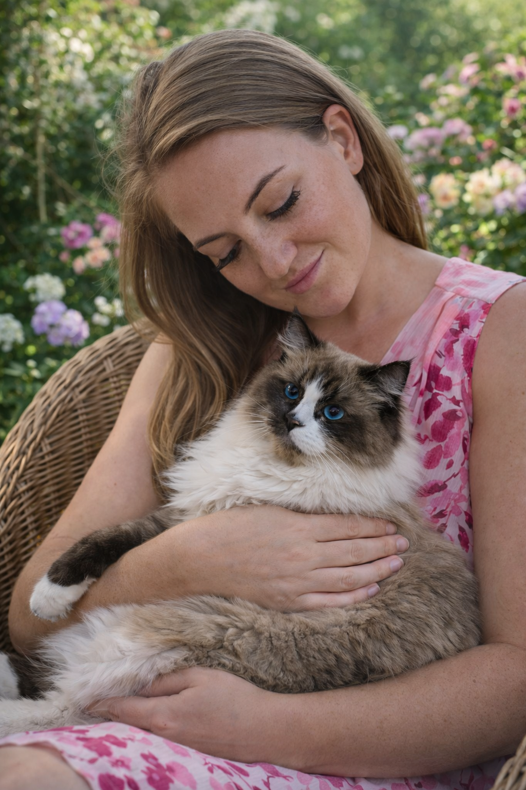

Hodowla kotów rasowych Ragdoll i norweskich leśnych Akwamaryn*PL
Akwamaryn*PL to domowa hodowla kotów rasowych w Polsce, w której piękno spotyka się z troską i spokojem. Specjalizujemy się w rasach ragdoll oraz norweski kot leśny, dbając o zdrowie, charakter i prawidłową socjalizację naszych kociąt. Nasze koty dorastają razem z nami, w domowej przestrzeni, gdzie liczy się bezpieczeństwo, bliskość człowieka oraz spokojny rytm codzienności.

O nas
Pasja, która dojrzewała przez lata
Cześć, mam na imię Agnieszka i to właśnie z ogromnej miłości do kotów powstała hodowla Akwamaryn*PL. Koty były obecne w moim życiu od dziecka i zawsze były mi bliskie.
Z czasem ta miłość przerodziła się w świadomą pasję i potrzebę stworzenia miejsca wyjątkowego, pełnego troski, piękna i odpowiedzialności.
Chciałam stworzyć hodowlę, w której kocięta dorastają w domu, z czułością i spokojem, przygotowane do życia w kochających rodzinach.
